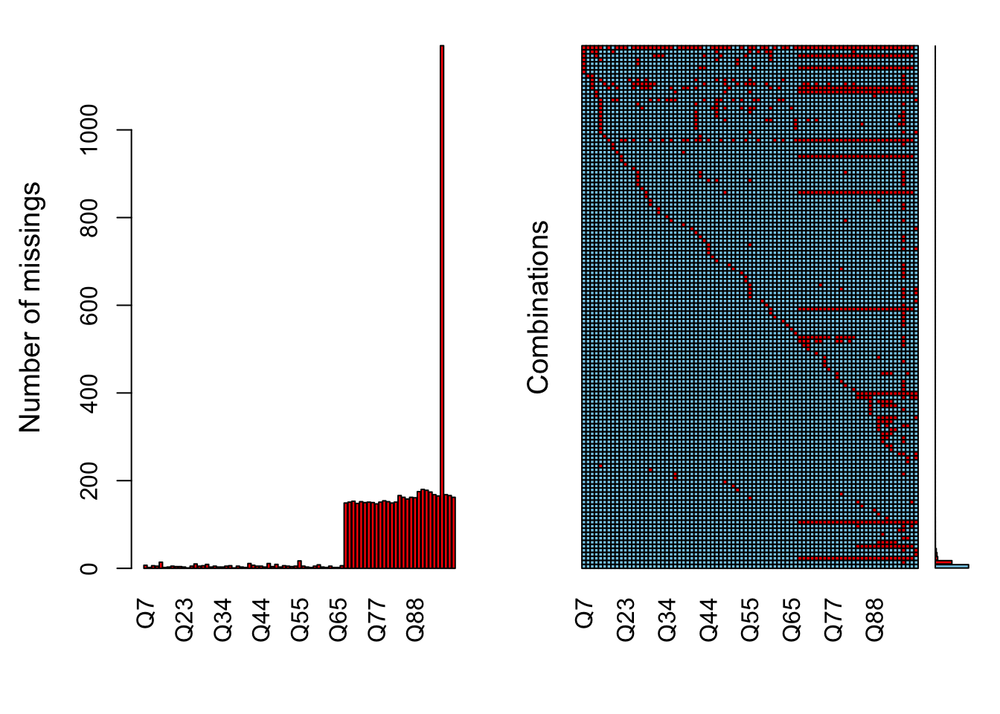
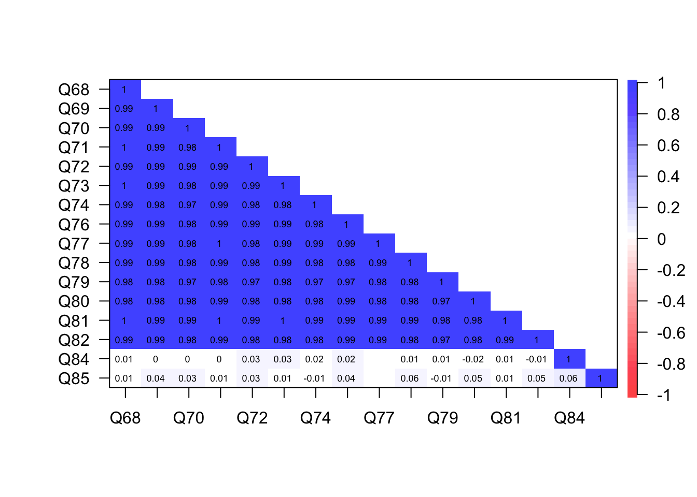

Data Preparation
This chapter documents our decisions surrounding how to prepare the data for analysis. These decisions include details on loading the necessary R packages, loading the data in R, coding or recoding of variables. Also discussed is how we deal with missing data.
Preliminary work
Load R packages. Some R users load all their packages up front. Others, perhaps for instructional reasons, load them just before calling functions, perhaps for instructional reasons. I can see merit in listing all the packages for properly citing them. Here is a code chunk for loading all the packages up front:
# LOAD PACKAGES
library(Hmisc) # for variable and value labels
library(VIM) # for missing data
library(naniar) # for missing data
library(corrplot) # for correlation plot
library(knitr) # how RMarkdown compiles code into documentsLoad data. The data are contained in an Excel file, simply named “data.xlsx”, in the “data” folder of this project. The important thing is to keep all the data in the same folder within the larger “SHAS Validity” project folder.
# LOAD DATA
library(readxl) # for reading the source Excel file
shas <- read_excel("data/data.xlsx") # load Excel fileSelect items for analysis. Which items should we include for analysis? The first 13 columns in the original data file report data from several screening items that were placed at the beginning of the questionnaire. But because they are constant and not variable, they don’t seem to have a place in scale development. Therefore it seems the important columns range from columns 14 to 97. The first set of items measure the External Events scale. These 52 items range from columns 14 to 35. The second set of items measure the Internal States scale, and these 14 items range from columns 66 to 79. The last set of items capture demographic variables, and these range from columns 80 to 97.
# SELECT DATASETS FOR ANALYSIS
all <- shas[, 14:97] # select items, dems from columns 14-79
items <- shas[, 14:79] # all Likert items
ext_items <- shas[, 14:35] # External Events items
int_items <- shas[, 66:79] # Internal States items
# REMOVE SELECTED COLUMNS
all <- subset(all, select = -c(Ext_Avg:Global_Avg)) # remove columns for now
# OTHER POSSIBLE DATASETS
write.csv(all, "data/all.csv", row.names = FALSE) # save data for later use
write.csv(items, "data/items.csv", row.names = FALSE)
write.csv(ext_items, "data/ext_items.csv", row.names = FALSE)
write.csv(int_items, "data/int_items.csv", row.names = FALSE)Labeling. This is probably the appropriate place to deal with the labeling of variables and their values. These things should be appropriately labeled to their content, wording, etc. But I have yet to figure this part out so I will come back to it.
library(Hmisc)
var.labels = c(
# VARIABLE LABELS: Items for External Events Subscale
Q7 = "My pastor/leader explicitly claiming to speak on God's behalf",
Q10 = "Being asked to give up personal, vocational, and/or educational goals by a pastor or group leader",
Q11 = "Seeing that anyone who disagreed with my church/pastor was consequently portrayed as evil",
Q16 = "My church community abandoning me in a difficult time",
Q17 = "Being treated as “less than” because of my sexual orientation",
Q18 = "Discouragement of critical thinking by my church or pastor",
Q19 = "Behavior being excessively monitored by my pastor or group members",
Q20 = "Seeing specific members being pressured to give money despite well-known personal financial hardship",
Q21 = "Being taught that I would be risking Hell if I left my particular church/group",
Q22 = "Being expected to follow my pastor/leader’s personal rules/advice around dating, marriage, and sex",
Q23 = "Prayer replacing needed medical interventions",
Q24 = "Being expected to consult my pastor/leader before making non-religious decisions",
Q25 = "Feeling unable to raise questions and issues",
Q26 = "Being pressured to forgive an abuser while the abuse was ongoing",
Q27 = "Being denied opportunities to serve/volunteer because of my gender",
Q28 = "Seeing the leadership or group protecting abusive individuals",
Q29 = "Feeling special when in my pastor/leader’s good graces; feeling ignored when I wasn’t",
Q30 = "Being deterred from seeking mental health treatment, counseling and/or medication",
Q31 = "Being shunned or ignored by my pastor or church/group",
Q32 = "Feeling unable to express unhappiness",
Q34 = "Seeing Scripture used to justify physical punishment or other types of severe discipline",
Q35 = "Being explicitly taught to distrust my emotions",
Q36 = "Mental or physical problems being interpreted as spiritual/moral weakness",
Q37 = "Being made to feel less spiritually advanced/mature than my pastor/leadership",
Q38 = "Having unrealistic demands placed on my moral or religious behavior",
Q39 = "Being made to feel shame over naturally occurring sexual desires (not actions)",
Q40 = "Threatening Divine punishment to keep group members in line",
Q41 = "Being denied opportunities to serve because of my sexual orientation",
Q42 = "Seeing others shamed or shunned by the pastor/leader or group",
Q43 = "Being shamed by my pastor or the group for poor spiritual/moral performance",
Q44 = "Love or acceptance only being offered if spiritual or moral performance was high",
Q45 = "Vivid descriptions of Hell, Satan, or demons being taught to young children that are developmentally inappropriate and/or anxiety-provoking",
Q46 = "Being treated as “less than” because of my skin color",
Q47 = "Medical care being postponed or not given at all for religious reasons",
Q49 = "The leadership or group not only protecting but elevating abusive individuals",
Q50 = "Being treated as “less than” because of my gender",
Q51 = "Experiencing extreme pressure to take on a role of pastor, missionary, or other spiritual leader",
Q52 = "Being blamed for harm that I suffered, rather than blaming those who harmed me",
Q53 = "Seeing Scripture used to justify abusive parent-child behavior",
Q54 = "Being explicitly taught to distrust my intuitions",
Q55 = "Hearing cultural references in sermons that were not commonly known to members of my racial or ethnic subculture",
Q56 = "Being made to feel like I was crazy or weird for having doubts or questions",
Q57 = "Developing mental or physical ailments as a result of stress from conforming to the group/leader’s expectation",
Q58 = "Terror or horror being used to motivate religious decisions",
Q59 = "Seeing the pastor or group blame the victim of abuse for the abuse itself",
Q60 = "Being encouraged to remain in an abusive marriage by religious leaders",
Q61 = "Vivid descriptions of the end of the world being taught to young children that are developmentally inappropriate and/or anxiety-provoking",
Q62 = "Seeing Scripture used to justify physical violence",
Q63 = "Being shamed by my pastor or the group for raising questions or concerns",
Q64 = "Witnessing women being pressured to stay in unfaithful or abusive marriages",
Q65 = "Being “cut off” or shunned by more religious family members",
Q66 = "Seeing others treated as “less than” because of their sexual orientation",
# VARIABLE LABELS: Items for Internal States Subscale
Q68 = "Anxiety attacks triggered by religious stimuli",
Q69 = "A lack of spiritual direction or purpose",
Q70 = "Feeling betrayed by God",
Q71 = "Personally avoiding religious activities or settings to reduce distressing feelings",
Q72 = "Feeling as if God harmed me directly",
Q73 = "Self-hatred or self-loathing",
Q74 = "Sadness over the loss of my faith/religious community",
Q76 = "Feeling that I wasted years of my life in a particular church or set of beliefs",
Q77 = "Anger upon reflecting on negative religious experiences",
Q78 = "A lack of self-worth",
Q79 = "Distrust of God",
Q80 = "Feeling isolated",
Q81 = "Nightmares about my negative religious experiences",
Q82 = "Having trouble navigating life outside my church/community",
# VARIABLE LABELS for Demographics
Q84 = "Age",
Q85 = "Gender",
Q86 = "Sexual orientation",
Q87 = "Race",
Q88 = "Raised in Christian home",
Q89 = "Denomination/group of most negative experience",
Q90 = "Racial makeup of denomination/group of most negative experience",
Q91 = "Race of leadership of denomination/group of most negative experience",
Q92 = "Gender of leadership of denomination/group of most negative experience",
Q95 = "Involvement in denomination/group of most negative experience",
Q93 = "Current religious identification"
)
label(items) = as.list(var.labels[match(names(items), names(var.labels))])Missing data
Missing data can be an important problem. The problem has two parts. The first is how many data are missing. Obviously the more data are missing, the larger the barrier this problem poses to analysis. The second is the mechanism of missing data. Are the missing data randomly, or is there a pattern to the missing data - like a problematic item, or a distinct group of examinees who chose not to respond? Figure 1 presents two plots from the VIM package for missing data (VIM?).
# VISUALIZE AND QUANTIFY MISSING DATA
library(VIM)
a <- VIM::aggr(all, plot = FALSE)
plot(a, numbers = TRUE, prop = FALSE)
Figure 1: Missing Data
The first plot in Figure 1 is a frequency distribution of the number of missing data entries for each item. This plot reveals very few missing data for the first set of External Events items, but nearly 200 missing entries for the second set of Internal States items and demographics. The raises two questions. The first is: Who were those examinees? We know that they responded to the first 52 items, then apparently quit the survey. Why? Was it just fatigue, or is there more to know about them? The second question is what to do with the information they actually did provide.
The second plot in Figure 1 illustrates the different combinations of missing entries. The blue squares represent cases with complete responses, and the red indicates missing data. The rows represent combinations of complete and missing responses. The bottom row of entirely blue squares represents complete data – examinees who responded to all of the items. The barplot on the right axis indicates that these were the most frequent combinations. The second most frequent combination was examinees who completed all of the External Events items and then quit the survey. Beyond that, there is no apparent order or pattern to the missing data.
Mechanism of missing data. McKnight et al. (2007) outline a variety of approaches for investigating the mechanisms of missing data. An appropriate first step is to test whether the data are Missing Completely At Random (MCAR) with the use of Little’s test Little (1988).
library(naniar)
mcar_test(all)# A tibble: 1 × 4
statistic df p.value missing.patterns
<dbl> <dbl> <dbl> <int>
1 2089. 8663 1 117This test is fairly conclusive. The p-value for the chi-square is 1, which means observed pattern of missing data do not diverge significantly from what would be expected if the data were missing completely at random.
Were examinees triggered? As mentioned above, a possible explanation of the missing data in the Internal States items is that examinees were triggered. As after responding to the preceding 52 items calling to mind imagery of abusive external events, these examinees were done with the survey. A possible test of this hypothesis is an examination of the relationship between a total score of responses to the External Events items and a score of total missingness on the Internal States items. The empirical work to test this hypothesis is laid out in the following code chunk. The items measuring external events are summed into a total score such that a higher value indicates more exposure to abusive external events. The items measuring internal states are coded so that 1=missing and 0=all others response, and these items are summed into a score of total missingness.
# 1. MAKE A COPY OF ALL THE ITEMS JUST FOR THIS ANALYSIS
miss_set <- all
# write.csv(miss_set,'data/miss_set.csv') # save as Excel
# to explore visually
# 2. RECODE INTERNAL STATES ITEMS AS DICHOTOMOUS
# (1=MISSING, 0=ENDORSED)
miss_set$Q68[miss_set$Q68 > 0] <- 0
miss_set$Q69[miss_set$Q69 > 0] <- 0
miss_set$Q70[miss_set$Q70 > 0] <- 0
miss_set$Q71[miss_set$Q71 > 0] <- 0
miss_set$Q72[miss_set$Q72 > 0] <- 0
miss_set$Q73[miss_set$Q73 > 0] <- 0
miss_set$Q74[miss_set$Q74 > 0] <- 0
miss_set$Q76[miss_set$Q76 > 0] <- 0
miss_set$Q77[miss_set$Q77 > 0] <- 0
miss_set$Q78[miss_set$Q78 > 0] <- 0
miss_set$Q79[miss_set$Q79 > 0] <- 0
miss_set$Q80[miss_set$Q80 > 0] <- 0
miss_set$Q81[miss_set$Q81 > 0] <- 0
miss_set$Q82[miss_set$Q82 > 0] <- 0
miss_set$Q68[is.na(miss_set$Q68)] <- 1
miss_set$Q69[is.na(miss_set$Q69)] <- 1
miss_set$Q70[is.na(miss_set$Q70)] <- 1
miss_set$Q71[is.na(miss_set$Q71)] <- 1
miss_set$Q72[is.na(miss_set$Q72)] <- 1
miss_set$Q73[is.na(miss_set$Q73)] <- 1
miss_set$Q74[is.na(miss_set$Q74)] <- 1
miss_set$Q76[is.na(miss_set$Q76)] <- 1
miss_set$Q77[is.na(miss_set$Q77)] <- 1
miss_set$Q78[is.na(miss_set$Q78)] <- 1
miss_set$Q79[is.na(miss_set$Q79)] <- 1
miss_set$Q80[is.na(miss_set$Q80)] <- 1
miss_set$Q81[is.na(miss_set$Q81)] <- 1
miss_set$Q82[is.na(miss_set$Q82)] <- 1
# 3. OBTAIN TOTAL SCORE ON EXTERNAL EVENTS ITEMS
miss_set$total_ext <- rowSums(miss_set[, c(1:52)]) # total score of exposure to abusive external events
miss_set$total_int <- rowSums(miss_set[, c(53:66)]) # a total score of internal states missingness
# 4. RUN CORRELATION BETWEEN TOTAL SCORE AND DICHOTOMOUS
# ITEMS
library(psych)
miss_set2 <- miss_set[, c(53:68)] # delete all but the internal states and total scores
miss_r <- lowerCor(miss_set2) # the correlation matrix, rounded to 2 decimals Q68 Q69 Q70 Q71 Q72 Q73 Q74 Q76 Q77 Q78 Q79
Q68 1.00
Q69 0.99 1.00
Q70 0.99 0.99 1.00
Q71 1.00 0.99 0.98 1.00
Q72 0.99 0.99 0.99 0.99 1.00
Q73 1.00 0.99 0.98 0.99 0.99 1.00
Q74 0.99 0.98 0.97 0.99 0.98 0.98 1.00
Q76 0.99 0.99 0.98 0.99 0.99 0.99 0.98 1.00
Q77 0.99 0.99 0.98 1.00 0.98 0.99 0.99 0.99 1.00
Q78 0.99 0.99 0.98 0.99 0.98 0.99 0.98 0.98 0.99 1.00
Q79 0.98 0.98 0.97 0.98 0.97 0.98 0.97 0.97 0.98 0.98 1.00
Q80 0.98 0.98 0.98 0.99 0.98 0.98 0.98 0.99 0.98 0.98 0.97
Q81 1.00 0.99 0.99 1.00 0.99 1.00 0.99 0.99 0.99 0.99 0.98
Q82 0.99 0.99 0.98 0.99 0.98 0.98 0.98 0.99 0.99 0.98 0.97
Q84 0.01 0.00 0.00 0.00 0.03 0.03 0.02 0.02 NA 0.01 0.01
Q85 0.01 0.04 0.03 0.01 0.03 0.01 -0.01 0.04 NA 0.06 -0.01
Q80 Q81 Q82 Q84 Q85
Q80 1.00
Q81 0.98 1.00
Q82 0.98 0.99 1.00
Q84 -0.02 0.01 -0.01 1.00
Q85 0.05 0.01 0.05 0.06 1.00corPlot(miss_r, stars = TRUE, upper = FALSE) # examine the many options for this function
Figure 2: Trigger Hypothesis
Figure 2 illustrates the correlations among the Internal States items (dichotomized according to their missingness (1=missing, 0=all others)), the total score from the external states (total_ext), and the total score of internal item missingness (total_int). The correlation of total_ext with all the other items is nearly zero, suggesting that more exposure to abusive external states did not predict nonresponse to the Internal States items. This finding is consistent with the finding from Figure ?? that the missing data appear to missing completely at random.
Missing data methods. There are several different ways to handle missing data. A common method is to delete all cases missing any data. This is called listwise deletion of data. Its primary advantages are simplicity, expedience, and analysis based on complete information. The disadvantages of listwise are (1) disposal of the information offered by those examinees who responded to some items but not others, and (2) diminishment of the dataset, and with it, a reduction in statistical power. The “all” data file of all Likert items and demographics items derived earlier reports data from 3,222 examinees. The following code chunk creates a subset of complete data. This smaller dataset has 1,841 examinees.
# LISTWISE DELETION OF MISSING DATA
all_l <- na.omit(all) # Likert items from columns 14-79 plus demographics post listwise
write.csv(all_l, "data/all_l.csv", row.names = FALSE) # save data
# OTHER POSSIBLE LISTWISE DATASETS
# items <- items[complete.cases(items), ] # create new
# dataset without missing data items_l <- na.omit(items) #
# Likert items from columns 14-79 post listwise ext_items_l
# <- na.omit(ext_items) # Likert items for external events
# post listwise int_items_l <- na.omit(int_items) # Likert
# items for internal states post listwise
# write.csv(items_l,'data/items_l.csv', row.names=FALSE)
# write.csv(ext_items_l,'data/ext_items_l.csv',
# row.names=FALSE)
# write.csv(int_items_l,'data/int_items_l.csv',
# row.names=FALSE)Analysis can proceed with these two datasets:
- the “all” dataset of all Likert and demographic items (N=3,222)
- the “all_l” dataset of 1,841 examinees who reported complete data